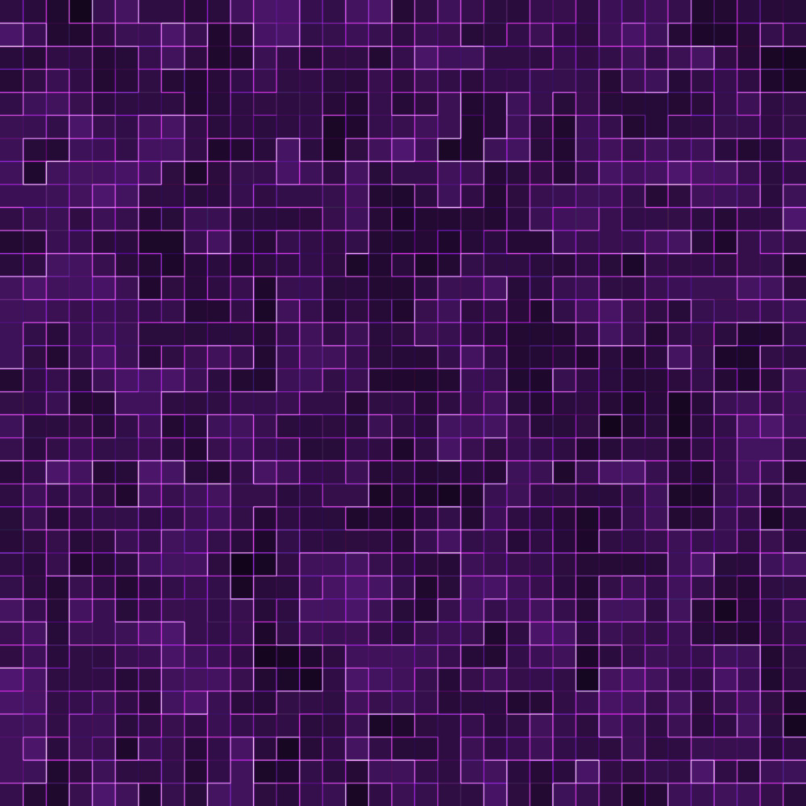

Enter: aloita peli tai uusi peli.
Nuolinäppäimet: lähde liikkeelle ja ohjaa matoa.
Escape: palaa aloitusvalikkoon.
Vaikeustasot
Helppo: pieni kenttä ja rauhallinen nopeus.
Keskivaikea: suurempi kenttä ja nopeampi mato.
Vaikein: suurin kenttä ja erittäin nopea mato.
Peli alkaa helpolta tasolta ja vaikeutuu automaattisesti.
Taustakuvan asetukset